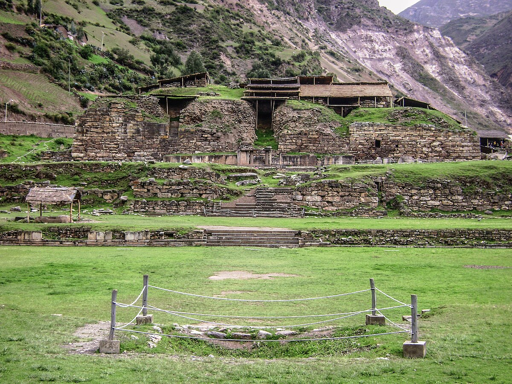
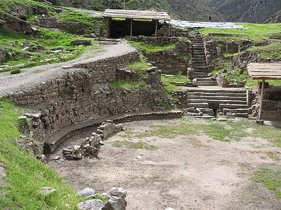

Arquitectura de la Civilización Chavín
La arquitectura de la civilización Chavín, que floreció en los Andes peruanos entre el 1000 y el 200 a.C., se caracteriza por su monumentalidad, el uso predominante de la piedra tallada y su función principalmente ceremonial y religiosa. El sitio más representativo es Chavín de Huántar, cuyo complejo arquitectónico revela una planificación sofisticada y una maestría en la construcción lítica.
Uno de los elementos distintivos de la arquitectura Chavín son los templos piramidales truncados. Estos edificios, como el Templo Antiguo y el Templo Nuevo en Chavín de Huántar, no eran pirámides puntiagudas, sino plataformas escalonadas con cimas planas donde se realizaban diversas actividades rituales. Su construcción implicó un esfuerzo comunitario significativo y un conocimiento avanzado de ingeniería.
Las plazas hundidas son otro rasgo característico. Estas áreas ceremoniales, de forma cuadrangular o circular, se encontraban a un nivel inferior al del terreno circundante y probablemente servían como espacios para congregaciones y rituales al aire libre. La Gran Plaza Circular de Chavín de Huántar es un ejemplo notable, con sus muros adornados con relieves líticos.
El sistema de galerías subterráneas es quizás uno de los aspectos más enigmáticos de la arquitectura Chavín. Laberínticos pasadizos y cámaras internas, construidos íntegramente en piedra, recorrían el interior de los templos. Estas galerías albergaban importantes artefactos religiosos, como el Lanzón Monolítico, y probablemente tenían una función ritual y simbólica profunda, representando quizás el inframundo o conectando con fuerzas sobrenaturales.
La decoración arquitectónica en Chavín es inseparable de su arte e iconografía. Los muros de los templos y las plazas estaban adornados con relieves de piedra que representaban a sus complejas deidades y seres míticos: felinos con colmillos prominentes, serpientes, aves de rapiña y seres antropomorfos con atributos animales. Estas representaciones no solo embellecían los edificios, sino que también transmitían mensajes religiosos y cosmológicos fundamentales para la sociedad Chavín.
El uso de materiales locales, principalmente la piedra (granito y otras rocas de la región), es evidente en toda su arquitectura. La precisión en el tallado y el ensamblaje de los bloques de piedra demuestran una alta especialización y planificación por parte de los constructores Chavín.
En resumen, la arquitectura Chavín no fue solo una cuestión de construcción, sino una manifestación artística y religiosa que reflejaba la cosmovisión de esta influyente civilización andina. Sus templos, plazas y galerías subterráneas eran escenarios para rituales y la expresión de su compleja fe, dejando un legado imponente para las culturas posteriores.